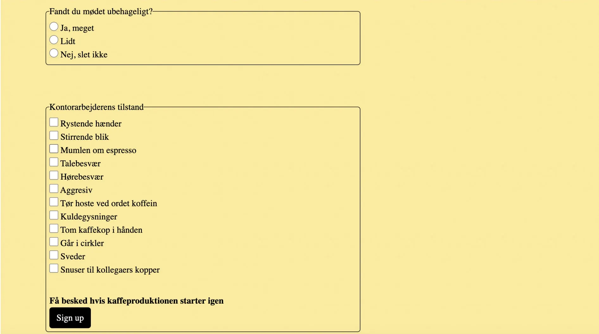

Tema 4
Brugergrænsefladeudvikling
Læring
I dette tema lærte jeg at arbejde med Adobe Illustrator, hvor jeg udviklede grafiske elementer. Jeg lærte om design af UI-elementer samt forskellige skitserings- og idéudviklingsteknikker. Jeg lavede papirprototyper, infografik og vektorgrafik. Jeg opnåede hertil erfaring med at arbejde i SVG-filer til brug i digitale løsninger. Derudover arbejdede jeg med HTML-forms og interaktive elementer som pop-up-vinduer og CSS transitions.
Projekt
Temaets projekt var at lave et “Emergency site” om et valgfrit emne. Min emergency var “Kaffekrisen 2025 - Global kaffemangel erklæret”. Sitet handlede om, at der ikke var mere kaffe tilbage, og hvad man skulle gøre, hvis man mødte en kaffehungrende kontorarbejder.
Process og løsning
Jeg brainstormede på ideer og fandt hurtigt mit emne. Efter min brainstorm lavede jeg en papirprototype over min infografik og fik en ide om, hvad indholdet skulle være. Jeg researchede på forskellige stilreferencer og fandt inspiration til min vektorgrafik fra den japanske illustrator Ryo Takemasa, som jeg lavede min skitse ud fra. Min endelige vektorgrafik lavede jeg i Adobe Illustrator. I min kodningsprocess gjorde jeg min infografik interaktiv med Javascript. Jeg udarbejdede også en web-formular, hvor man kunne rapportere en kaffekrise.
Min web-formular
